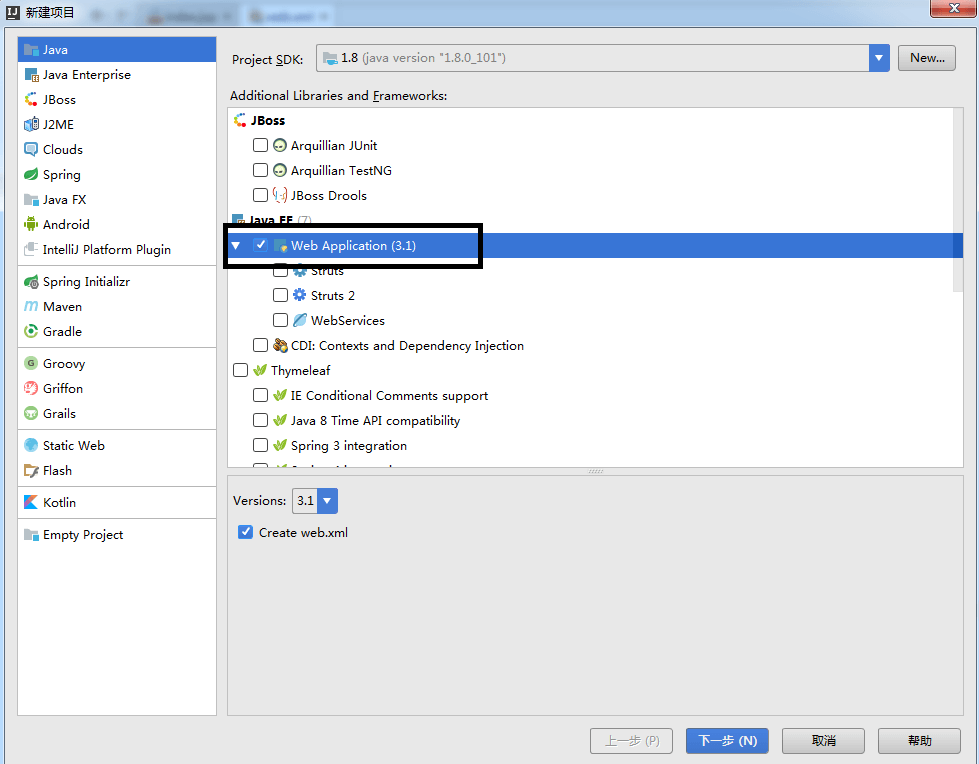
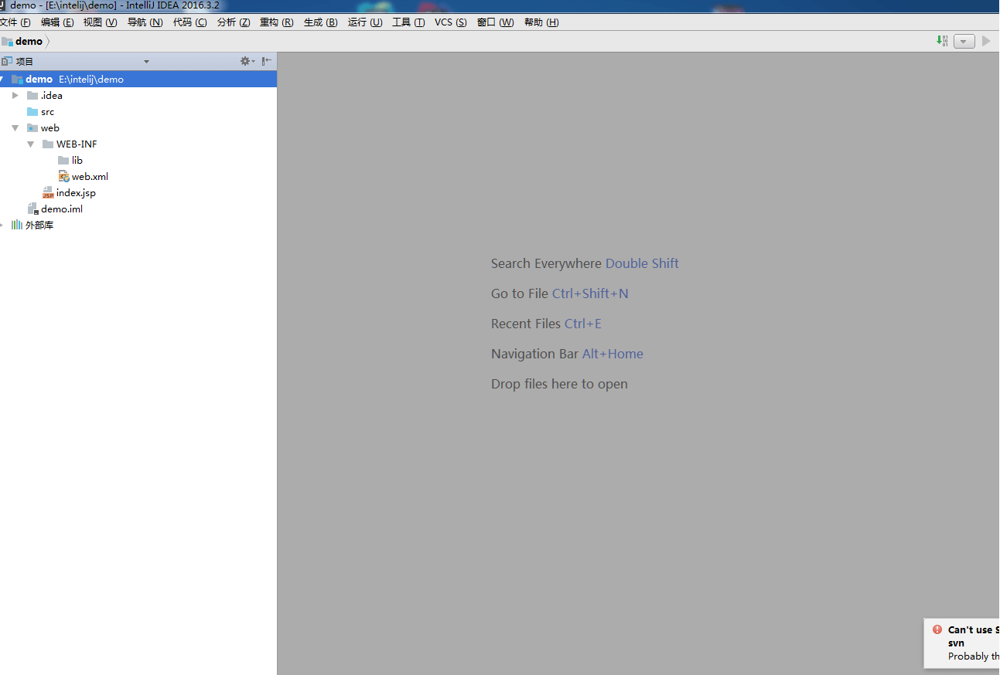
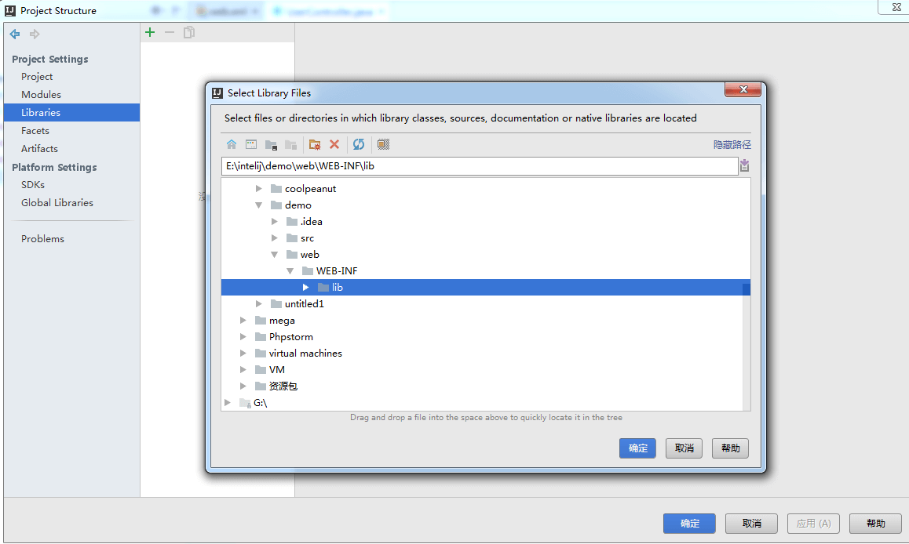
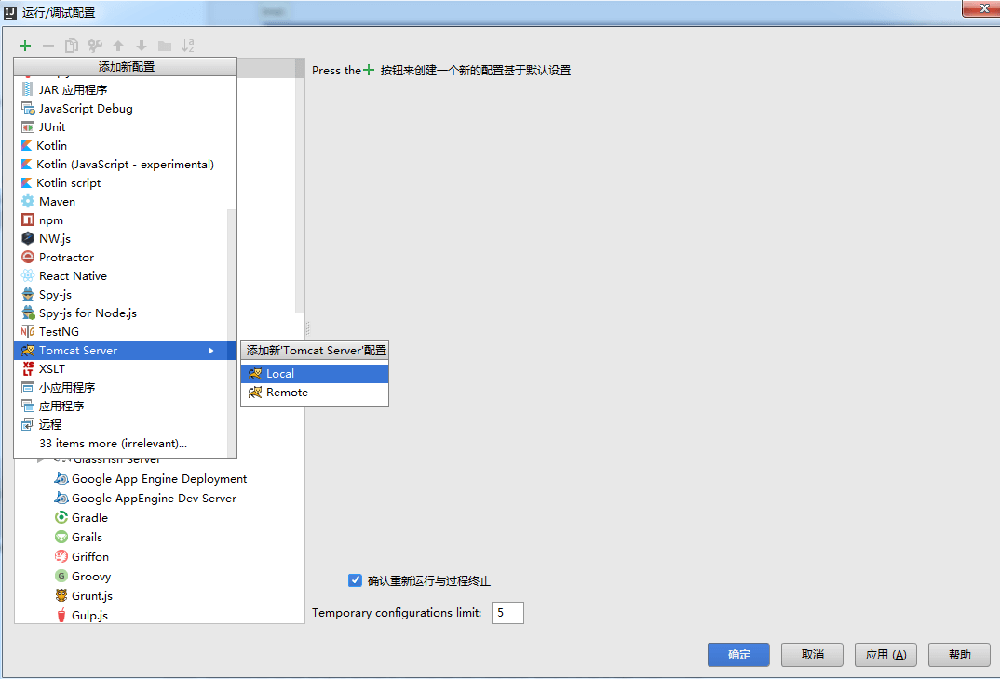
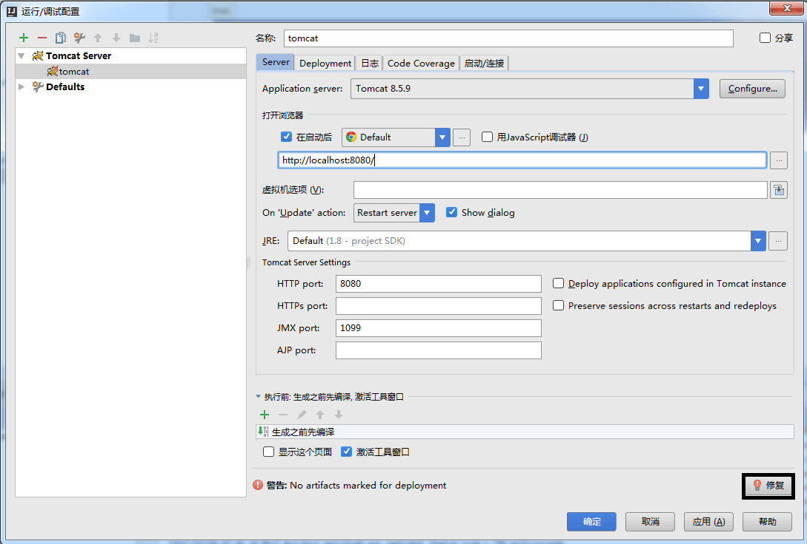
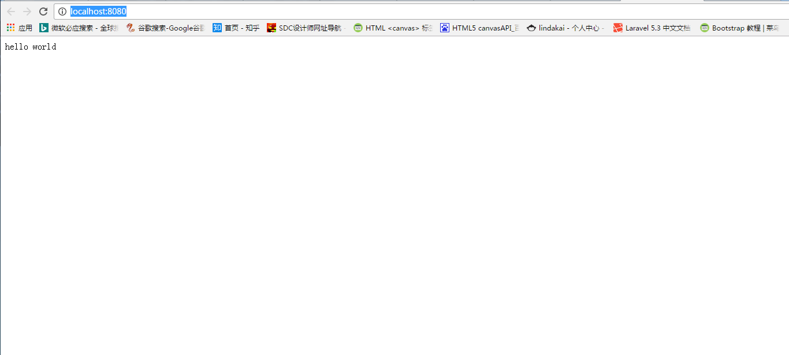

springMVC环境搭建，基于intelij开发环境
1.在intelij中新建java web项目，如下：

勾选Create web.xml,点击下一步，输入项目名称demo，点击完成。在web/WEB-INF/下新建目录lib，项目目录结构如下：

2.在web/WEB-INF/lib中添加如下jar包
spring-framework-4.3.2.RELEASE-dist.zip，解压后libs下所有.RELEASE的jar，带sources和javadoc的不用引入。
下载地址: http://repo.spring.io/libs-release-local/org/springframework/spring/
commons-logging-1.2.jar
下载地址: http://commons.apache.org/proper/commons-logging/download_logging.cgi
servlet-api.jar
下载地址: https://mvnrepository.com/artifact/javax.servlet/servlet-api/2.5
3.配置web.xml,如下：
<?xml version="1.0" encoding="UTF-8"?>
<web-app xmlns="http://xmlns.jcp.org/xml/ns/javaee"
xmlns:xsi="http://www.w3.org/2001/XMLSchema-instance"
xsi:schemaLocation="http://xmlns.jcp.org/xml/ns/javaee http://xmlns.jcp.org/xml/ns/javaee/web-app_3_1.xsd"
version="3.1">
<!--配置spring-->
<listener>
<listener-class>org.springframework.web.context.ContextLoaderListener</listener-class>
</listener>
<!--配置springMVC-->
<servlet>
<servlet-name>spring</servlet-name>
<servlet-class>org.springframework.web.servlet.DispatcherServlet</servlet-class>
<!-- 可以自定义servlet.xml配置文件的位置和名称，默认为WEB-INF目录下，名称为[<servlet-name>]-servlet.xml，如spring-servlet.xml
<init-param>
<param-name>contextConfigLocation</param-name>
<param-value>/WEB-INF/spring-servlet.xml</param-value>
</init-param>
-->
<load-on-startup>1</load-on-startup>
</servlet>
<servlet-mapping>
<servlet-name>spring</servlet-name>
<url-pattern>/*.do</url-pattern>
</servlet-mapping>
<!-- 指定Spring Bean的配置文件所在目录,默认为/WEB-INF/applicationContext.xml,如果使用默认值，则必须新建applicationContext.xml -->
<context-param>
<param-name>contextConfigLocation</param-name>
<param-value>/WEB-INF/applicationContext.xml</param-value>
</context-param>
</web-app>
4.根据web.xml中context-param指定的配置文件路径新建spring-servlet.xml,添加如下内容：
<?xml version="1.0" encoding="UTF-8"?>
<beans xmlns="http://www.springframework.org/schema/beans"
xmlns:context="http://www.springframework.org/schema/context" xmlns:p="http://www.springframework.org/schema/p"
xmlns:mvc="http://www.springframework.org/schema/mvc" xmlns:xsi="http://www.w3.org/2001/XMLSchema-instance"
xsi:schemaLocation="http://www.springframework.org/schema/beans
http://www.springframework.org/schema/beans/spring-beans-3.0.xsd
http://www.springframework.org/schema/context
http://www.springframework.org/schema/context/spring-context.xsd
http://www.springframework.org/schema/mvc
http://www.springframework.org/schema/mvc/spring-mvc-3.0.xsd">
<!-- 启动包扫描功能，以便注册带有@Controller、@Service、@repository、@Component等注解的类成为spring的bean-->
<context:component-scan base-package="com.example.package" />
<!-- 启动注解驱动的Spring MVC功能，注册请求url和注解POJO类方法的映射 -->
<mvc:annotation-driven />
<!-- 对模型视图名称的解析，在请求时模型视图名称添加前后缀 -->
<bean id="viewResolver" class="org.springframework.web.servlet.view.InternalResourceViewResolver">
<property name="prefix" value=""></property>
<property name="suffix" value=".jsp"></property>
</bean>
</beans>
根据web.xml中contextConfigLocation的路径添加applicationContext.xml，其内容置空。
<?xml version="1.0" encoding="UTF-8"?>
<beans xmlns="http://www.springframework.org/schema/beans"
xmlns:context="http://www.springframework.org/schema/context" xmlns:p="http://www.springframework.org/schema/p"
xmlns:mvc="http://www.springframework.org/schema/mvc" xmlns:xsi="http://www.w3.org/2001/XMLSchema-instance"
xsi:schemaLocation="http://www.springframework.org/schema/beans
http://www.springframework.org/schema/beans/spring-beans-3.0.xsd
http://www.springframework.org/schema/context
http://www.springframework.org/schema/context/spring-context.xsd
http://www.springframework.org/schema/mvc
http://www.springframework.org/schema/mvc/spring-mvc-3.0.xsd">
</beans>
关于spring-servlet.xml与applicationContext.xml的区别，applicationContext.xml 和 dispatch-servlet.xml形成了两个父子关系的上下文。
1） 一个bean如果在两个文件中都被定义了(比如两个文件中都定义了component scan扫描相同的package)， spring会在application context和 servlet context中都生成一个实例， 他们处于不同的上下文空间中，他们的行为方式是有可能不一样的。
2） 如果在application context和 servlet context中都存在同一个 @Service 的实例， controller（在servlet context中） 通过 @Resource引用时， 会优先选择servlet context中的实例。
不过最好的方法是：在applicationContext和dispatcher-servlet定义的bean最好不要重复， dispatcher-servlet最好只是定义controller类型的bean。
ApplicationContext.xml 是spring 全局配置文件，用来控制spring 特性的
dispatcher-servlet.xml是spring mvc里面的，控制器、拦截uri转发view
使用applicationContext.xml文件时是需要在web.xml中添加listener的：
<listener>
<listener-class>org.springframework.web.context.ContextLoaderListener</listener-class>
</listener>
5.在src下新建con.example.package包，新建controller包，在下面新建UserController.java，内容如下：
package com.example.package.controller;
import javax.servlet.http.HttpServletRequest;
import javax.servlet.http.HttpServletResponse;
import org.springframework.stereotype.Controller;
import org.springframework.ui.ModelMap;
import org.springframework.web.bind.annotation.PathVariable;
import org.springframework.web.bind.annotation.RequestMapping;
import org.springframework.web.bind.annotation.RequestMethod;
import org.springframework.web.servlet.ModelAndView;
@Controller
public class UserController {
@RequestMapping(value = "/", method = RequestMethod.GET)
public String registPost() {
return "index";
}
}
正常情况下intelij会报错，提示Cannot resolve symbol XXX，因为没有配置lib的路径，lib下的jar无法识别。点 文件->项目结构->Libraries,New Project Library选择java，在弹出框中 选择上面建的lib文件夹，然后在Artifacts下加入lib，或者直接点修复快速添加lib，点确定。

6.在根目录下新建index.jsp，内容如下：
<html>
<head>
<title>hello</title>
</head>
<body>
hello world
</body>
</html>
7.配置tomcat运行环境，菜单栏点击 运行->编辑结构->添加新配置->Tomcat Server->local，如下：

如果没有本地没有安装tomcat,添加新配置中不会出现Tomcat Server选项，则必须安装Tomcat，
下载地址为: http://tomcat.apache.org/download-80.cgi
安装完成后，在 运行->编辑结构->Default->Tomcat Server->Local中添加Application Server,点击Configure，添加tomcat的安装路径，点击应用，然后执行上面一步。

填写名称，在Deployment中添加demo对应的artifacts，或者直接点击修复快速添加。

在tomcat中运行项目，在浏览器中输入localhost:8080出现hello world则框架搭建成功。
